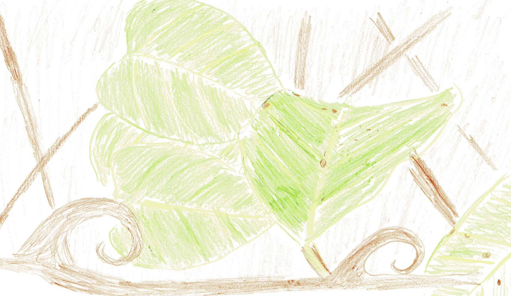

The Amazon is a fruitful rainforest full of luscious vegetation, but what some people don’t know is that the Amazon is one of the biggest contributors to the world’s ecosystem. No one really thinks about this area that takes up most of Brazil’s vast space, but the river basin that contains the Amazon Rainforest is very important to our lives.

One of the amazing ways the Amazon Rainforest helps the world is through medicinal plants. Lots of plants found exclusively in the Amazon Rainforest are effective healing herbs. 70% of plants known today that could treat cancer are found in the Amazon Rainforest only. If loggers, ranchers, settlers or anyone at all cuts down the Amazon, lots of human beings could die of cancer and other diseases or medical conditions, like stomach ulcers. The world cannot let this happen. Humans only know a limited number of the herbs and plants in the Amazon Rainforest. There could be many more if researcher have the time and resources to look for them.
Cat’s Claw- Cat’s Claw is a large woody vine found only in the Amazon that has many healing properties. It can cure many diseases, including stomach ulcers and kills some cancer cells in studies done in test tubes at Maryland University and other places worldwide. They use a method called Chemosensitivity testing. Chemosensitivity testing is taking a peice of cancer infected blood and regrowing the tumor. Researchers then test it to see what drugs would cure the patient. Scientists are just starting to study Cat’s Claw, but it is possible that it could cure HIV, kidney problems, bladder cancer and much more. This is only the beginning of this miracle herb. If the rainforest is destroyed, the world might never know the full extent of its abilities.
Pusangade Motelo- Found only in the Amazon, Pusangade Motelo is a plant that helps anxiety and makes you happier, as well as calming you. Pusangade Motelo can be useful for so many things, like focusing, or sleeping. The possible medical uses are endless. However, if the world loses these plants with the rainforest, researchers can no longer find new, creative uses for this miracle plant.
Brazilian Ginseng- Eating food off the ground helps build your immune system, but not as much as Brazilian Ginseng! The only place to find this plant is in Brazil, or more specifically, the Amazon Rainforest. Having a strong immune system can sometimes be better than a cure or treatment, for it could stop you from getting sick in the first place. Brazilian Ginseng is a plant that enhances your immune system. It also can energize you, and even has anticancer properties.
Overall, the Amazon Rainforest is a full first-aid kit, so cutting it down could cost many lives. It helps the world in so many ways, and humans are cutting it down in a conquest for money, risking lives in the process.